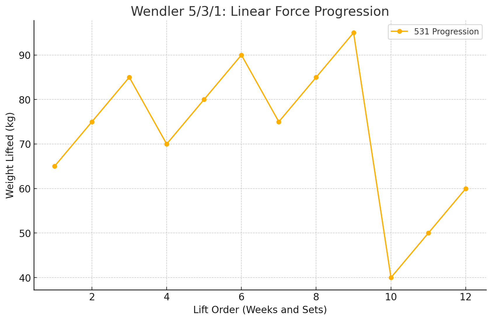

5/3/1 Programmation
By Alexandre CARTON in Fitness Strength
January 3, 2021
2024-12-02 - 15:48
Status :
Tags : [[force]] [[fitness]] [[programmation]]

531 Strength program
- Entre 2 et 4 jours par semaine
- Un jour = un mouvement principal parmi le press, le deadlift, le benchpress et le squat, puis du travail accessoire en bonus et en fonction du temps
- Cyclage entre 4 semaines
Cyclage sur 4 semaines du 5/3/1 Programme :
![[Pasted image 20241202155507.png]] ![[Pasted image 20241202155019.png]] Commencer le programme : estimer son RM pour le deadlift, squat, bench et press
- j’estime mon 1 RM pour chaque lift par rapport à mon experience
- je me met a 80%/85% de mon RM estimé et je fais un max de rep
- j’utilise la formule pour estimer mon RM pour la programmation
Poids x Reps x 0.333 + Poids = RM estimé
exemple : j’estime pouvoir faire 100kg en back squat je peux faire 8 rep a 80 kg de squat : 80 x 8 x 0.0333 + 80 = 101kg –> mon RM pour le cycle

Je calcule mes poids cible (prise en compte d’un ratio 90% par rapport au RM estimé à l’étape d’avant)
![[Pasted image 20241202161136.png]]
Echauffement
1 × 5 @ 40% /1 × 5 @ 50% /1 × 3 @ 60% /Work sets
![[Pasted image 20241202163910.png]] J’ai fait un google drive : https://docs.google.com/spreadsheets/d/1jc_27dO1kWw4x7jRnOJMZslXYy-CLhI9/edit?usp=drive_link&ouid=112204073087317390382&rtpof=true&sd=true
Il manque l’integration des exercices d’assistances, je peux rajouter une section
References :
[[531 The Simplest and Most Effective way to get strong (Jim Wendler)]]
5/3/1/ Program
This is a very easy program to work with. The following is a general outline of the training I suggest. I’ll go into detail on each point in the chapters to follow. You will train 2-4 days per week(this will be up to you). One day will be devoted to the standing military press, one day to the parallel squat, one day to the deadlift and one day to the bench press. Each training cycle lasts 4-6 weeks. This depends on how many days a week you train. The first week you will do 3 sets of 5 reps(3 × 5). The second week you will do 3 sets of 3 reps(3 × 3). The third week you will do 1 set of 5 reps, 1 set of 3 reps and 1 set of 1 rep(5/ 3/ 1). The fourth week you will do 3 sets of 5 reps(3 × 5). This is an easy deload week. After the fourth week, you begin again with 3 sets of 5 reps. Each week and each set has a percentage to follow, so you won’t be guessing what to do anymore. Surlignement (jaune) page: 119